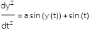
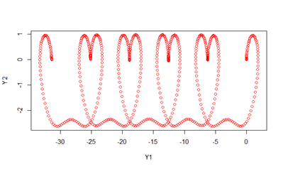

โปรเจ็คของผมบน GitHub
maemod package เป็นแพ็คเกจภาษา R ที่ผมเขียนเพื่อจะช่วยให้คนที่อยากจะแก้สมการ ordinary differential equations ใน R สามารถทำได้ง่ายขึ้น โดยหวังว่ากลุ่มคนที่เพิ่งจะเรียนรู้ R หรือไม่รู้เกี่ยวกับภาษา R สามารถนำไปใช้ได้ง่ายขึ้น
ตัวอย่าง code ของ maemod เพื่อแก้สมการ 
mysystem <-
“!MAEMOD_Begin
STARTTIME <- 0
STOPTIME <- 20*pi
DT <- 0.1
!Equations
dY1<-Y2
dY2<-a*sin(Y1)+sin(t)
!Parameters
a= -1.0
!Inits
Y1=0,Y2=0
!Outputs
!Plots
!MAEMOD_End
“
out<-maemod.ode(input.text =mysystem )
plot(out[,c(2,3)],col="red")
